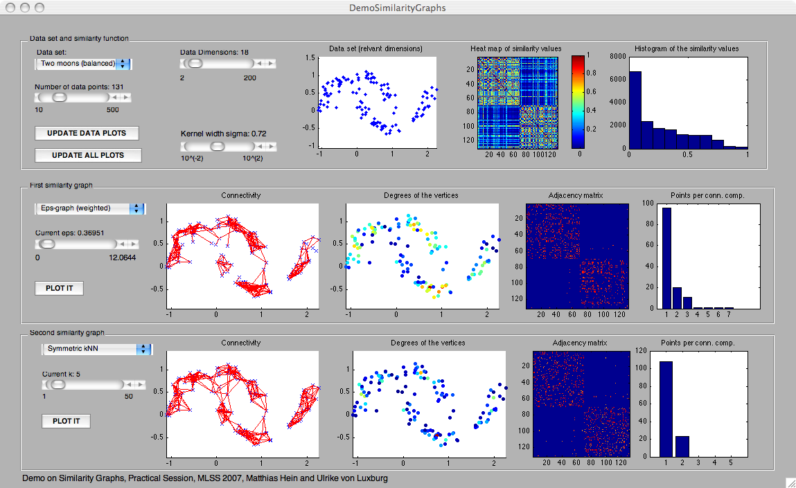
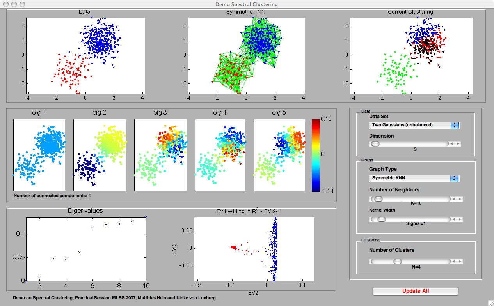

GraphDemo
a Matlab GUI to explore similarity graphs and their use in machine learning
by Matthias Hein and Ulrike von Luxburg
|
GraphDemo a Matlab GUI to explore similarity graphs and their use in machine learning
by Matthias Hein and Ulrike von Luxburg |
Many machine learning algorithms model local neighborhoods using similarity graphs: manifold methods for dimensionality reduction or data denoising, spectral clustering, label propagation for semi-supervised learning, and so on. However, for most of those algorithms it is pretty unclear which kind of similarity graph one should use, and how its parameters have to be chosen.
To get some intuition about those questions we wrote the GraphDemo package. It aims to highlight the behavior of different kinds of similarity graphs and to demonstrate their influence on the outcome of machine learning algorithms. The package currently contains three different parts:
|
 |
 |
|
The GraphDemo has originally been written for teaching purposes. It has first been used in the practical sessions of the Machine Learning Summer School 2007.
GraphDemo has been written by Matthias Hein, Department of Computer Science, Saarland University and Ulrike von Luxburg, Max-Planck-Institute for Biological Cybernetics, Tuebingen, Germany. GraphDemo is released under the GNU public license.
Download GraphDemos.zip (Size: 12.6 MB) (Version: 1.0.1)
26.10.2007,
Version 1.0:
Initial Release
10.04.2008,
Version 1.0.1:
bug fix in the demo on spectral clustering, problem in the case of small disconnected components resolved
To run the GraphDemo, download the file GraphDemo.zip. Unzip the file GraphDemo.zip in some convenient directory. Add this directory to the Matlab path variable or cd to this directory within Matlab. The three demos can then be called from within Matlab by the commands 'DemoSimilarityGraphs', 'DemoSpectralClustering', 'DemoSSL'. The GUI should be compatible with Matlab 7.x. If you find bugs or have other comments contact Matthias Hein.
All three demos use the same data sets. In all demos, the user can select the data set in a popup-menue and adjust its dimensionality using a slider. All data sets (except USPS, see below) have two dimensions which contain the data structure, the other dimensions are pure noise. The data sets and the noise have been generated according to the following data models:
Note that all data sets (except USPS) are ordered according to classes. This means that the heat maps of the similarity matrix or the adjacency matrices are block matrices.
- Two moons balanced: the first two dimensions are two half-circles of two moons shape (as shown in the screen shot). In all dimensions, Gaussian noise with mean 0 and variance 0.01 has been added. Both moons have the same weight (probability mass), that is in expectation they will contain the same number of data points.
- Two moons unbalanced: as "Two moons balanced", but the two classes have unequal weights of 0.2 and 0.8, respectively. That is, in expectation only 20% of the points come from the first moon, while 80% of the points come from the second moon.
- Two Gaussians balanced: The data are the two points, (-1.1,-1.1) and (1,1), in two-dimensional space. Both points are disturbed by Gaussian noise of variance 0.36 and dimension given by the "dimension"-parameter. Both classes have equal weight.
- Two Gaussians unbalanced: As "Two Gaussians Balanced", but unbalanced class weights of 0.2 and 0.8.
- Two Gaussians different variance: As "Two Gaussians Balanced", but each point is disturbed by a Gaussian with different variance.
- Three Gaussians: The data are the three points (1,1), (-1.1,-1.1) and (2,-2), in two-dimensional space. All three points are disturbed by Gaussian noise of variance 0.36. The weights of the Gaussian are 0.3, 0.3 and 0.4.
- Two Gaussians, no clusters (in DemoSSL only): As "Two Gaussians Balanced", but the decision boundary goes through the middle of the two Gaussians.
- USPS (in DemoSSL only): This is the well-known USPS data set of handwritten digits, which is available online. It is the test set containing 2007 digits. No noise dimensions are added in this case. That means that the sliders "dimension" and "number of points" have no effect.
We use for all data sets the the Euclidean distance: d(x,y) = ||x - y|| as distance function.
As similarity function , for all data sets we used the Gaussian kernel s(x,y) = exp(- || x - y||^2 / (2 sigma^2) ). The kernel width sigma can be adjusted using a slider. Note that what a "reasonable" value of sigma is changes with the number of noise dimensions. The panels "Heat map of the similarity matrix" and "Histogram of the similarity values" in DemoSimilarityGraphs are meant to help the user to choose a good parameter sigma. These reasonable parameters should then be used in DemoSpectralClustering and DemoSSL.
Warning: Due to the limited numerical precision, for high dimensional data sets a too small value of the parameter sigma can lead to zero weights. Then the graph is completely disconnected.
The purpose of a similarity graph is to connect data points in "local neighborhoods". Each data point corresponds to a vertex in the neighborhood graph. Depending on the type of similarity graph, "close" vertices will be connected.
- Epsilon-neighborhood graph: Two vertices are connected if the distance of the corresponding data points is less than epsilon. In machine learning, the epsilon-neighborhood graph is used both as a weighted or unweighted graph. In the weighted case, the edge weights are the similarity (!) values of the adjacent points (note that edge weights in similarity graphs should always be similarities, not distances!). The parameter of this graph is epsilon, it can be set by a slider in all demos.
- Note that a completely connected graph (as it is sometimes used in connection with the Gaussian kernel) can be achieved using an epsilon-neighborhood graph and setting epsilon to its maximal value.
- The symmetric k-nearest neighbor graph: two vertices x, y are connected if x is among the k-nearest neighbors of y or vice versa. In this demo, we use a weighted symmetric k-nearest neighbor graph, that is all edges are weighted by the similarity of the adjacent points. The parameter of this graph is k, it can be set by a slider in all demos. [The name "symmetric kNN graph" is not standard, in many papers this graph is simply called "the kNN graph". We use the term "symmetric" to distinguish it from the mutual kNN graph, see below. ]
- The mutual k-nearest neighbor graph: two vertices x, y are connected if x is among the k-nearest neighbors of y and vice versa. Similarly we use a weighted mutual k-nearest neighbor graph, that is all edges are weighted by the similarity of the adjacent points. The parameter of this graph is k, it can be set by a slider in all demos.
... can be found on the pages DemoSimilarityGraphs, DemoSpectralClustering, and DemoSSL.